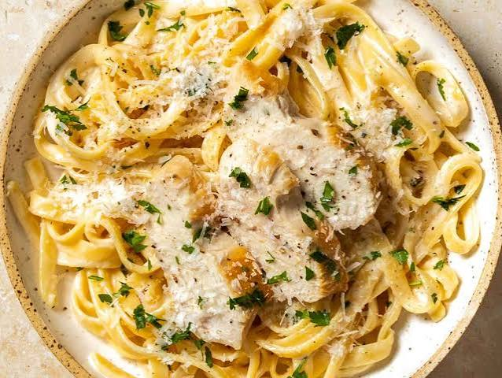

Classic Chicken Alfredo

Description
A rich and comforting Italian-American pasta dish featuring tender fettuccine noodles and seared chicken breast coated in a velvety, garlicky Parmesan cream sauce.
Ingredients
- Fettuccine pasta: 12 oz (340g) dried noodles.
- Chicken breast: 1 lb (450g) boneless, skinless breasts, cut into bite-sized pieces.
- Olive oil: 1 tbsp for cooking the chicken.
- Unsalted butter: 1/2 cup (1 stick).
- Garlic cloves: 3, minced.
- Heavy cream: 1.5 cups, room temperature.
- Parmesan cheese: 1 cup, freshly grated.
- Salt and black pepper: To taste.
- Fresh parsley: 2 tbsp, finely chopped for garnish.
Steps
- Boil the pasta: Bring a large pot of salted water to a boil, cook the fettuccine until al dente according to package instructions, drain, and set aside.
- Sear the chicken: Heat olive oil in a large skillet over medium-high heat, season the chicken pieces with salt and pepper, and sauté for 5 to 7 minutes until cooked through and golden brown. Remove chicken from the pan and set aside.
- Melt the butter and garlic: Lower the skillet heat to medium, add the butter, and let it melt. Stir in the minced garlic and cook for about 1 minute until fragrant, taking care not to burn it.
- Simmer the cream: Pour in the heavy cream and bring the mixture to a gentle simmer. Let it cook for 3 to 5 minutes, stirring frequently, until it starts to thicken slightly.
- Emulsify the cheese: Turn the heat to low and gradually stir in the freshly grated Parmesan cheese until completely melted and the sauce becomes smooth and velvety.
- Combine and toss: Add the cooked fettuccine and seared chicken back into the skillet with the Alfredo sauce. Toss well to coat the noodles evenly.
- Garnish and serve: Season with additional black pepper to taste, sprinkle with fresh parsley, and serve immediately while hot.
Home